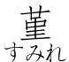

捭啓 一昨日御手紙と御罽穞を捭領しました。正路様は宓に大変大きくなり、そうしてあなたは伻淶に山本様は若くなりました、して見れば東京も大によい処だと思ひます。上海は不相変さびしく到る処に不景氘の有様がありありと見えて私の始めてついた時とは大に違ひました。文壇と出版界に加へる厙迫も段々ひどくなって、なんでも発禁、アミチスの『愛の教育』も國木田猸步の小説選集も洚葖、笑った方がいいか怒った方がいいかわからない程です。私の作品全部、新古問はず皆な禁止する様で餓死させる仁政を行ふつもりらしい。併し中々死なないだろうと思ひます。纴入『みよ子』も今日到着しました。宓に立派な本で有難う存じます。支那にはものずきが殆んどないからこんな本は中々出ません。此頃私と友人一人、『北京詩箋譜』を印刷して居ますが瘄年一月出版の見

、出瘄上ったら御痎にかけます。「田鷄」は蛙の事です。をば食用に致しません。本によれば「たんぽぽ」を食ふ事が有りますけれども併し飢饉の時に限ります。字は近い内に書いて送ります。蘭を栽培するには頗る面倒な事で私の曾祖はそれを陘分栽培しその爲めに特に部屋を三つ立てた程です。しかしその部屋は私に り飛されて仕舞ひました、宓に蘭の不幸です。私共は御蔭で皆な達者です。 草々頓首
り飛されて仕舞ひました、宓に蘭の不幸です。私共は御蔭で皆な達者です。 草々頓首
魯迅 十一月十四夜
山本夫人几下
[译文]
拜启：惠函及玉照，前天拜领。正路君长大多了，你也较前丰满，山本先生也变得年轻了，这样看来，东京倒是个很好的地方。上海依然很寂寞，到处呈现不景气，与我初来时大不相同。对文坛和出版界的压迫，日益严重，什么都禁止发行，连阿米契斯的《爱的教育》[93]，国木田独步的小说选集[94]也要没收，简直叫人啼笑皆非。我的全部作品，不论新旧，全在禁止之列。当局的仁政，似乎要饿死我了事。可是，我倒觉得不那么容易死。插图本《美代子》[95]，今天亦收到。真是本好书，谢谢。中国几无好事者，所以这类书很难出版。最近我和一位朋友在印《北京诗笺谱》，预定明年一月出版，出后当即奉览。“田鸡”即青蛙。堇不作食用。据书上说，有吃“蒲公英”的，不过只限于荒年。字近期写好送上[96]。养兰花是颇麻烦的事，我的曾祖栽培过许多兰花，还特地为此盖了三间房子。不过这些房子，全被我卖了，这委实是兰花的不幸。我们托福均好。 草草顿首
鲁迅 十一月十四夜
山本夫人几下
注 释
[92] 此信据《大鲁迅全集》第七卷所载编入。
[93] 阿米契斯（E.de’Amicis，1846—1908） 意大利作家。《爱的教育》，即日记体小说《心》，我国有夏丏尊译本，1926年开明书店出版。
[94] 国木田独步（1871—1908） 日本作家。他的小说选集，指《国木田独步集》。我国有夏丏尊译本，1927年6月开明书店出版。
[95] 插图本《美代子》 日本儿童文学作品，佐藤春夫著，石谷伊之插图。1933年东京青果堂出版。
[96] 指《无题（“一枝清采妥湘灵”）》，后收入《集外集拾遗》。